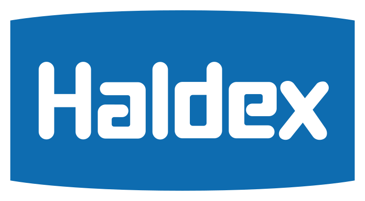

Fren Diski
Disk yüzeyi ölçümü, tornalama ihtiyacı tespiti ve kaliper uyumlu değişim.
İspar Otomotiv; kaliper, pnömatik valf, dorse/aks ve mekanik fren sistemlerinde bakım, onarım ve arıza tespiti yapar. Filonuzu yolda bırakmayacak çözümler sunuyoruz.
Kaliper bakım ve onarımında bu markaların sistemlerine uygun tamir takımları ve teknik bilgiyle çalışıyoruz.


Marka logoları ilgili marka sahiplerine aittir; yalnızca sunduğumuz servis uyumluluğunu belirtmek amacıyla gösterilmektedir.
Ağır vasıta fren sistemlerinin en çok yıpranan üç bileşeninde bakım, ölçüm ve değişim hizmeti veriyoruz.
Disk yüzeyi ölçümü, tornalama ihtiyacı tespiti ve kaliper uyumlu değişim.

Dingil aks grubunda kampana ve fren pabucu bakımı, ayar ve değişim.

Aşınma kontrolü ve marka uyumlu balata/tamir takımı değişimi.
Kaliperden dorse aksına, pnömatik valften mekanik fren-yay grubuna kadar tüm bakım ve onarım ihtiyaçlarınız tek adreste.
Disk fren kaliperlerinde söküm, revizyon ve montaj hizmeti. Marka bazlı orijinal tamir takımlarıyla çalışıyoruz.
Basınç kontrol ve pnömatik valflerde arıza tespiti, bakım ve değişim. Hava devresi sızıntı kontrolü dahildir.
Dorse fren sistemleri ve dingil aks grubunda periyodik bakım, ayar ve parça yenileme çalışmaları.
Kampana, balata ve yay takımlarında bakım, değişim ve ayar. Mekanik fren sistemlerinde tam kontrol.
Hava sistemi ventillerinin revizyonu ve tamiri; basınç kayıplarına karşı erken teşhis ve onarım.
Hava hattı rekor ve bağlantı parçalarında servis ve tedarik; sızdırmazlık ve montaj kontrolü.
BPW, HALDEX, WABCO, MERITOR ve KNORR sistemlerine özel bilgi ve tamir takımları.
Arıza tarifine göre net bilgilendirme, aracınızın en kısa sürede yola çıkması için hızlı planlama.
İhtiyaca göre orijinal ya da kalite standartlarına uygun muadil parça seçenekleri.
Ağır vasıta fren sistemleri konusunda uzmanlaşmış, filo ihtiyaçlarına aşina bir ekip.
İspar Otomotiv, kamyon, çekici ve dorse fren sistemlerinin bakım ve onarımında çalışan İzmir merkezli bir servis firmasıdır. Kaliper, pnömatik valf, dingil aks ve mekanik fren sistemlerinde marka bazlı çözümler sunar.
Firmayı TanıyınKaliper bakım ve onarımı, pnömatik valf servisi, dorse ve dingil aks bakımı, mekanik fren ve yay sistemleri, havalı ventil tamiri ile rekor ve bağlantı elemanları servisi sunuyoruz.
BPW, HALDEX, WABCO, MERITOR ve KNORR marka kaliper tamir takımları ile ilgili bakım ve onarım hizmeti veriyoruz.
İzmir merkezli olarak hizmet veriyor, İzmir ve çevre illerdeki ağır vasıta filolarına destek sağlıyoruz.
+90 232 479 27 27 numaralı telefondan arayabilir, info@isparotomotiv.com adresine e-posta gönderebilir ya da iletişim formunu doldurabilirsiniz.
Araç ve filo ihtiyacına göre hem orijinal hem de kalite standartlarına uygun muadil parça seçenekleri sunuyoruz.
Telefonla ön bilgilendirme ücretsizdir — hemen arayın veya formu doldurun.